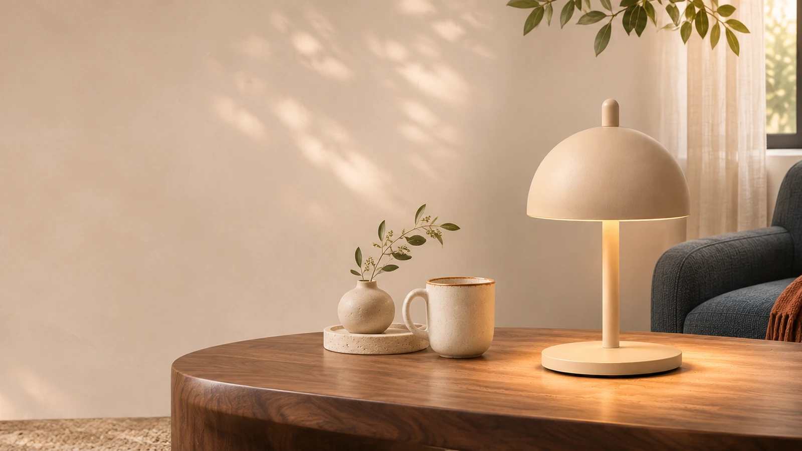
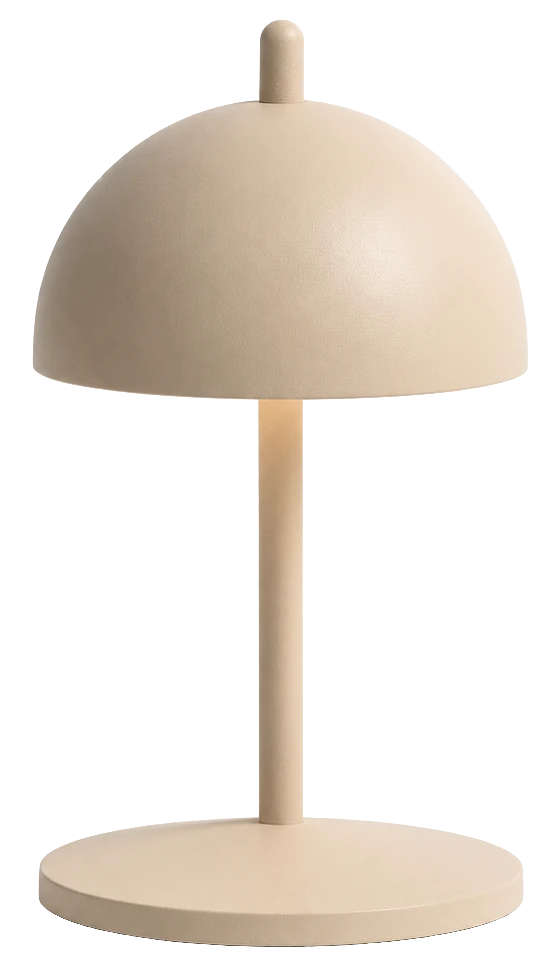
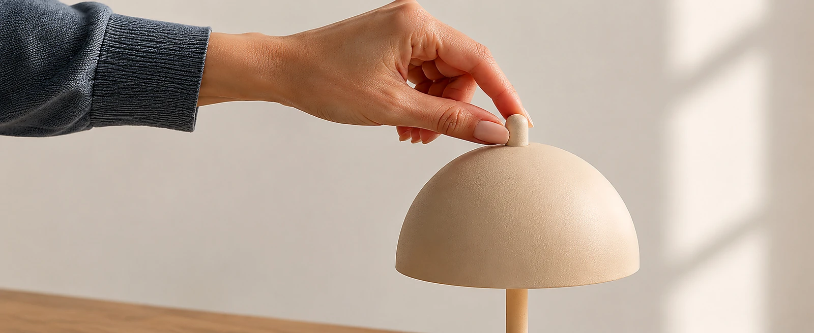
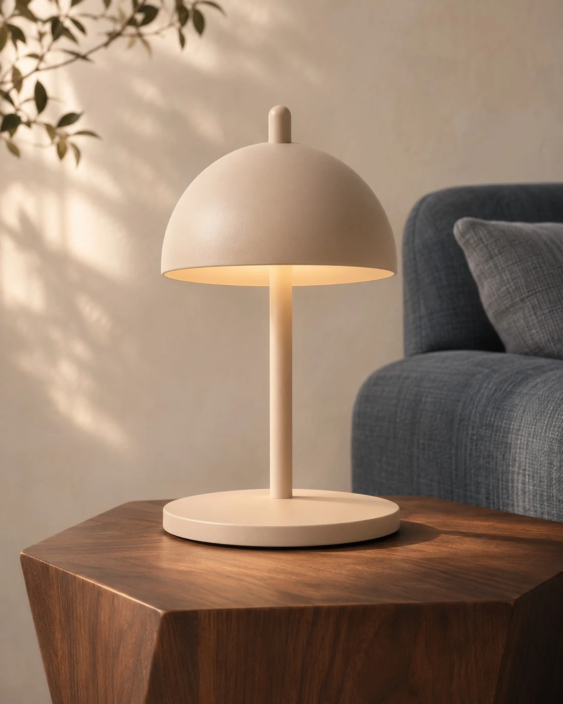
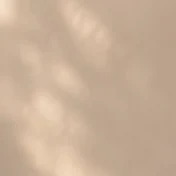
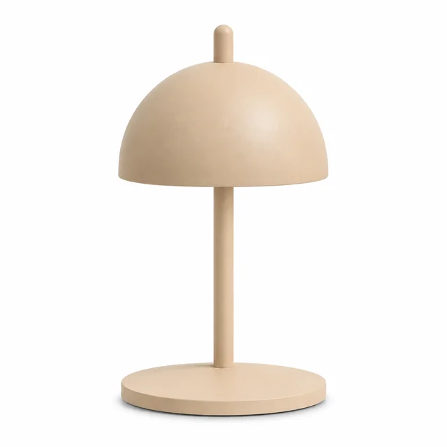
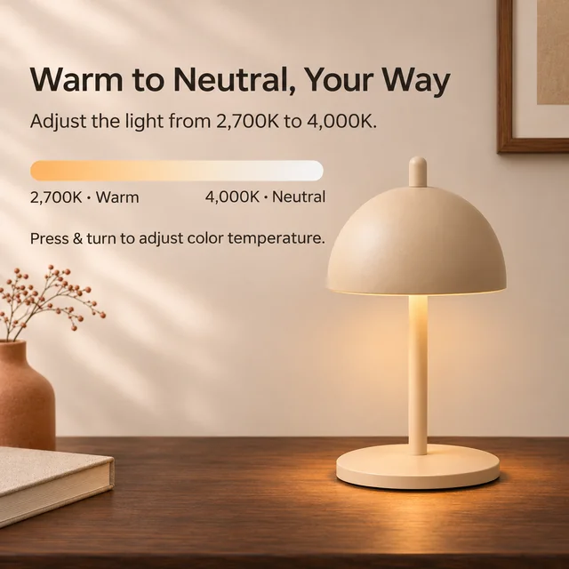
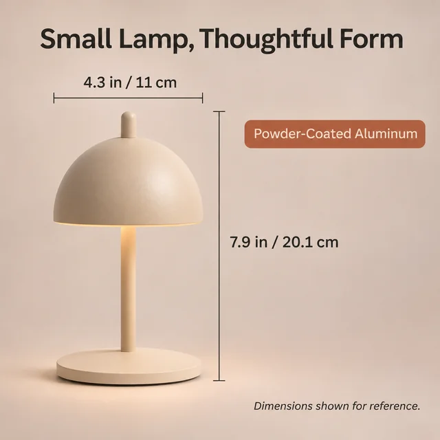
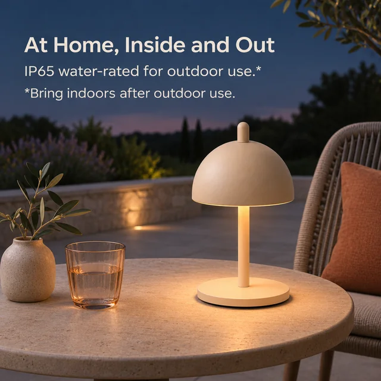

01 / OVERVIEW
项目概述
一盏灯，
四种沟通任务。
围绕NED Eric台灯，探索从商品识别、操作理解到生活氛围的电商视觉表达。以暖中性与自然材质连接整套内容，让每一部分回答不同的问题。
亚马逊美国站展示语境下的作品集模拟，非品牌委托，未实际上架或投放。
- 项目
- AI协作电商视觉模拟
- 重点
- 内容组织、设计判断与多端适配
- 成果
- 商品图、Listing、高级A+、品牌故事及Banner
02 / CONTRIBUTION
我的工作与 AI 协作
Migo
- 提出项目目标与审美方向
- 选择参考与比较版本
- 作出取舍，提供审稿与迭代反馈
Codex + AI
- 资料整理、图像生成与合成
- 英文文案、SVG 排版与导出
- 执行范围以原制作记录为依据
同一盏灯，保留两种环境的光线
台灯是两个场景共同的焦点，周围空间保留各自的色调与光线。
先看清灯的外形，再看怎么操作
蘑菇形灯罩、细灯杆与圆底座构成 Eric 的完整外形。近景把顶部旋钮和手部动作放大，读者可以顺着画面找到操作位置。


项目参考色
从灯罩、暖墙、木桌和织物看五个参考色如何连接产品、场景与页面。


沙灰 #D8CABC
呼应暖墙的中性色，把场景里的柔和色调延续到网页。
以上色值为项目设计参考。
每类成果回答一个问题
- 商品图
- 这是什么，怎么用？
把外观、操作、尺度和使用场景拆成可快速浏览的图。
- A+
- 细节和体验是怎样的？
用连续图文展开材质、操作和使用。
- 品牌故事
- 它在怎样的生活空间中出现？
用生活场景解释品牌语境。
- Banner
- 哪个画面能让人愿意继续看这盏灯？
用代表性场景和简短信息引导浏览。
NED Collections
NED Eric Cordless Table Lamp, Rechargeable Dimmable Accent Light with Adjustable Color Temperature, Sand Cashmere
About this item
- Cordless ambient light: A compact, rechargeable lamp that moves from a bedside table to a dining setting or a favorite corner. Use it without a cord once charged.
- One-knob control: Press to switch on or off, turn to dim from 5% to 100%, and press and turn to adjust the color temperature from 2,700K to 4,000K.
- Up to 8 hours: Enjoy up to 8 hours of light on a full charge, depending on brightness. Charging takes approximately 6 hours. A charging cord is included; a power adapter is not included.
- Compact, rounded form: Approximately 7.9 inches high and 4.3 inches in diameter (20.1 x 11 cm). Made with powder-coated aluminum in Sand Cashmere.
- Indoor and outdoor settings: NED lists an IP65 rating for outdoor use and recommends bringing the lamp indoors after outdoor use.
Product description
The NED Eric Table Lamp brings adjustable ambient light and a rounded silhouette to everyday spaces. Its compact, cordless design moves from a bedside table to a dining setting or a favorite corner. The Sand Cashmere finish adds a warm, understated touch.
Use the top knob to switch the lamp on or off, adjust the brightness from 5% to 100%, and adjust color temperature from 2,700K to 4,000K. Made with powder-coated aluminum, it measures approximately 7.9 inches high by 4.3 inches in diameter (20.1 x 11 cm).
A full charge provides up to 8 hours of light, depending on brightness; charging takes approximately 6 hours. A charging cord is included; a power adapter is not included. NED lists an IP65 rating and recommends bringing the lamp indoors after outdoor use.
At a glance
| Material | Powder-coated aluminum |
|---|---|
| Dimensions | Approx. 7.9 inches high x 4.3 inches in diameter |
| Color temperature | 2,700K–4,000K |
| Runtime | Up to 8 hours; varies with brightness |
| Outdoor use | IP65 listed by NED; bring indoors after use |


产品主图
先建立完整外观识别

产品展示
把产品放回生活空间

旋钮操作
近景解释具体动作


光色调节
把操作与光感联系起来

夜间使用
呈现夜间的使用情境


尺寸与材质
回答尺度与表面的问题


户外情境
保留环境与使用条件

多场景使用
同一产品延续不同空间
既有项目成果 · 非真实 Amazon 上架页面